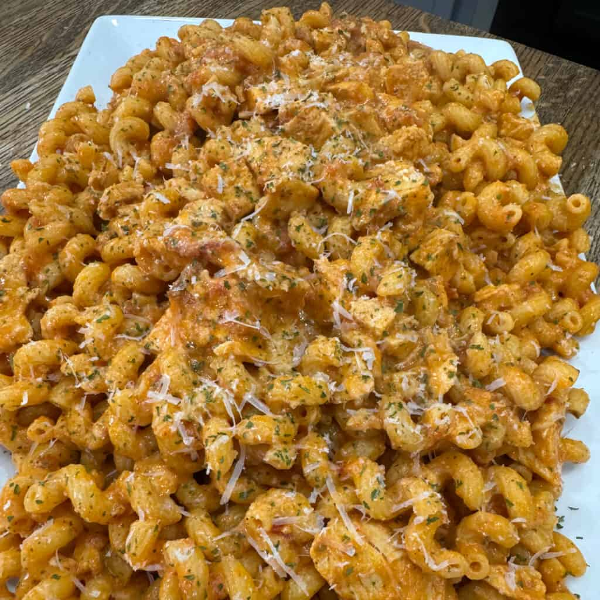

Crockpot Creamy Chicken Pasta
Servings:
6
⬇ Download PDF

"A viral internet favorite. This effortless slow cooker dish combines robust marinara, rich Alfredo sauce, and tender shredded chicken into a velvety, family-friendly pasta bake."
Ingredients
Protein
- 1 lb chicken breasts, boneless and skinless
Seasonings & Aromatics
- 1 tbsp minced garlic
- 1 tsp Italian seasoning
- 1 tsp onion powder
- ½ tsp salt
- ½ tsp black pepper
- ½ tsp red pepper flakes
Sauces & Cheeses
- 24 oz jar marinara sauce
- 15 oz jar Alfredo sauce
- 1 cup mozzarella cheese, shredded
- Grated Parmesan cheese, for serving
Pasta & Garnish
- 16 oz dried pasta (Cellentani, cavatappi, or penne)
- Dried parsley, for garnish
Instructions
- Layer the crockpot: Lightly spray the interior of your slow cooker with non-stick cooking spray. Lay the whole chicken breasts in an even layer at the bottom. Season evenly with salt, black pepper, onion powder, red pepper flakes, and Italian seasoning. Toss the minced garlic over the top.
- Add the sauces: Pour the entire jar of marinara sauce over the seasoned chicken, then pour the Alfredo sauce right on top. No need to mix yet.
- Slow cook: Secure the lid and cook on LOW for 4–6 hours until the chicken is exceptionally tender and reaches an internal temperature of 165°F.
- Shred & melt: Remove the cooked chicken and shred with two forks (or cut into bite-sized cubes). Return the chicken to the slow cooker and stir in the shredded mozzarella. Keep on low heat and stir until the cheese is fully melted into the sauce.
- Boil the pasta: Bring a large pot of salted water to a rolling boil. Cook pasta according to package directions, aiming for firm al dente. Drain completely.
- Combine & serve: Add the drained pasta directly into the slow cooker and toss until the noodles are uniformly coated in the rich, creamy sauce. Portion onto plates and garnish with grated Parmesan and dried parsley.
Chef's Tip
- Noodle selection: Pasta with ridges, twists, or hollow curves work best — Cellentani (cavatappi) or penne rigate trap the thick sauce inside their folds for a perfect ratio in every bite.